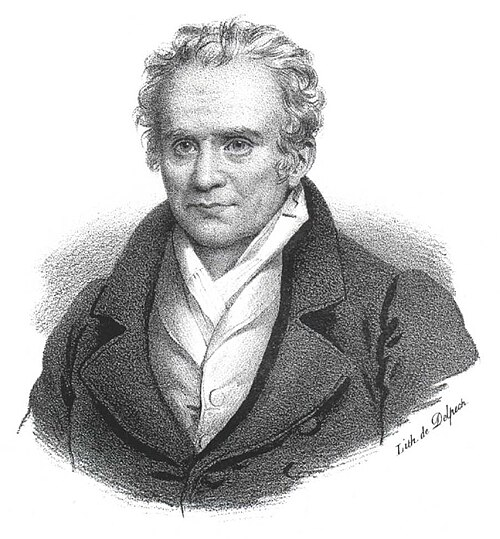
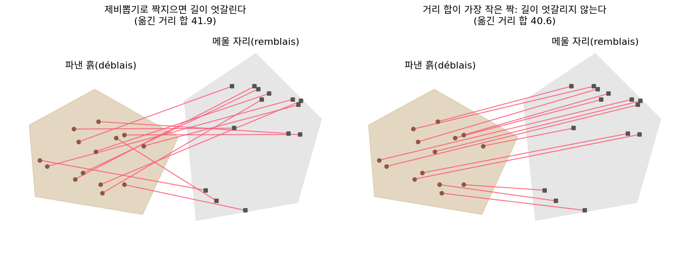
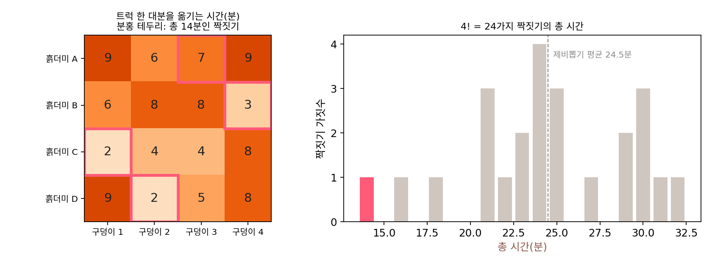

최적 수송: 흙을 가장 적게 나르는 짝짓기
이 장의 물음
지금까지 이 책에서 최적화로 움직인 것은 점 하나였다. 손실이라는 지형 위에 파라미터 θ라는 점을 놓고, 그 점을 그래디언트 반대쪽으로 한 스텝씩 옮겼다. 그런데 생성 모델을 학습시키다 보면 움직여야 하는 것이 점 하나가 아니라 샘플 수천 개로 이루어진 덩어리 전체인 경우를 만난다. 노이즈 샘플 256개를 그림 256장으로 바꾸는 흐름을 배우려면, 먼저 어느 노이즈 샘플이 어느 그림으로 가야 하는지부터 정해야 한다. 아무렇게나 짝지으면 샘플들이 가는 길이 서로 엇갈리고, 엇갈린 길을 흉내 내야 하는 신경망은 휘어진 흐름을 배우게 된다.
비슷한 일은 다른 자리에서도 생긴다. 물체 검출 모델이 상자 세 개를 내놓았고 그림 속에 물체가 셋 있으면, 손실을 재기 전에 어느 상자가 어느 물체를 맞힌 것인지 짝부터 지어야 한다. 생성한 그림이 진짜 그림과 얼마나 닮았는지 숫자 하나로 재고 싶을 때도, 두 분포가 겹치는 곳이 거의 없으면 크로스 엔트로피에서 익숙한 KL 발산은 무한대가 되어 버려 「조금 닮음」과 「전혀 안 닮음」을 가려 주지 못한다.
세 경우 모두 밑에 깔린 물음은 같다. 한쪽 무더기를 다른 쪽 무더기로 옮길 때, 무엇을 어디로 보내야 옮기는 수고가 가장 적은가? 이 장은 다음 물음에 차례로 답한다.
- 흙더미 여럿을 구덩이 여럿에 하나씩 짝지을 때 가장 싼 짝짓기는 어떻게 찾을까? 짝짓기의 가짓수가 폭발적으로 늘어나면 어떻게 할까?
- 흙더미 하나를 여러 구덩이에 나눠 보내도 된다면 문제는 어떻게 달라질까?
- 「어디로 얼마나 보낼까」 대신 「장소마다 값을 얼마로 매길까」를 물어도 같은 답에 닿을까?
- 옮기는 최소 비용을 두 분포 사이의 거리로 쓸 수 있을까? 한 쌍을 옮기는 비용은 거리로 잴까, 거리의 제곱으로 잴까?
- 샘플이 수천 개일 때도 빨리 풀 수 있을까?
몽주 문제: 흙더미마다 구덩이 하나씩
공사장에 흙더미 넷(A, B, C, D)이 있고, 메워야 할 구덩이도 넷(1, 2, 3, 4)이 있다. 흙더미 하나가 트럭 한 대분이고 구덩이 하나도 트럭 한 대분이라, 흙더미 하나를 구덩이 하나에 모두 부으면 된다. 문제는 어느 흙더미를 어느 구덩이로 보내느냐인데, 트럭이 오가는 시간은 길과 언덕 때문에 길마다 다르다. 하루 일정이 빠듯한 현장 감독이라면 네 대가 길에서 보내는 시간의 합이 가장 작은 배정을 찾고 싶을 것이다. 흙더미가 넷이면 배정은 몇 가지이고, 그 가운데 가장 좋은 것은 어떻게 찾을까?
역사: 공병 학교의 수학 교사가 흙 나르기를 식으로 적다

흙을 어디로 보낼지라는 물음을 처음 수학으로 적은 사람은 프랑스의 수학자 가스파르 몽주(Gaspard Monge)다. 그는 메지에르의 왕립 공병 학교에서 수학을 가르쳤다. 성을 쌓고 참호를 파는 공병의 일에는 한쪽에서 흙을 파내고(déblais, 파낸 흙) 다른 쪽을 그 흙으로 메우는(remblais, 메울 자리) 일이 늘 따른다. 흙 한 줌을 옮기는 수고를 「흙의 양 × 옮긴 거리」로 잡으면, 파낸 흙의 어느 부분을 메울 자리의 어느 부분으로 보내야 수고의 합이 가장 작을까?
몽주는 흙을 가장 적게 나르는 법을 묻는 이 물음을 「파낸 흙과 메울 자리의 이론에 대한 논고(Mémoire sur la théorie des déblais et des remblais)」에 담아 1781년 3월 28일 파리 과학 아카데미에서 읽었고, 글은 아카데미의 1781년 논문집(1784년 인쇄)에 실렸다. 같은 글에서 몽주는 가장 좋은 운반에서는 흙이 가는 길들이 서로 엇갈리지 않는다는 성질을 적었다. 두 길이 엇갈리면 도착지를 서로 바꿔 수고를 줄일 수 있기 때문이다. 다만 흙 한 줌 한 줌을 반드시 한 자리로 보내야 하는 그의 꼴은 다루기가 무척 까다로웠고, 그가 내놓은 주장들에 빈틈없는 증명이 나오기 시작한 것은 200년 가까이 지난 20세기 후반이었다고 알려져 있다.

흙더미 넷, 구덩이 넷
공사장 문제로 돌아가자. 가능한 배정을 하나도 빠짐없이 늘어놓아 답을 확인할 수 있어서 흙더미 넷과 구덩이 넷처럼 작은 문제를 골랐다. 아래 표는 길과 언덕 사정을 반영해 설명을 위해 지은 것으로, 흙더미에서 구덩이까지 트럭 한 대분을 옮기는 데 드는 시간(분)이다.
| 구덩이 1 | 구덩이 2 | 구덩이 3 | 구덩이 4 | |
|---|---|---|---|---|
| 흙더미 A | 9 | 6 | 7 | 9 |
| 흙더미 B | 6 | 8 | 8 | 3 |
| 흙더미 C | 2 | 4 | 4 | 8 |
| 흙더미 D | 9 | 2 | 5 | 8 |
A가 갈 곳은 네 가지, B는 남은 세 가지, C는 남은 두 가지, D는 남은 한 곳이므로 배정은 4 × 3 × 2 × 1 = 24가지다. 24가지의 총 시간을 모두 더해 보면 가장 짧은 것은 A→3, B→4, C→1, D→2로 7 + 3 + 2 + 2 = 14분이고, 14분을 내는 배정은 이것 하나뿐이다. 그다음은 16분, 가장 긴 것은 32분이다. 24가지 가운데 하나를 제비뽑기로 고르면 평균 24.5분이 걸리니, 잘 고른 배정은 제비뽑기보다 10분 넘게 아낀다.

이렇게 출발점 하나를 도착점 하나에 짝짓되, 쌍마다 드는 비용의 합이 가장 작은 짝짓기를 찾는 문제를 몽주 문제 (하나씩 짝지어 나르기 / Monge problem)라 한다. 흙더미 i를 구덩이 T(i)로 보낸다고 적으면 다음과 같다.
배정의 가짓수는 n! 이다. n = 10이면 3,628,800가지이고, n = 20이면 약 2.4 × 10¹⁸가지라 하나씩 세어 보는 일은 금방 불가능해진다. 다행히 다 세지 않고 푸는 방법이 있다. 1955년 해럴드 쿤(Harold W. Kuhn)은 헝가리 수학자 쾨니그(Dénes Kőnig)와 에게르바리(Jenő Egerváry)의 1931년 착상을 이어받아, 표의 행과 열에서 같은 수를 빼 가며 0인 칸으로 짝짓기를 찾는 방법을 냈고, 두 사람을 기려 「헝가리안 방법」이라 불렀다. 헝가리안 방법은 계산량이 n!이 아니라 n의 거듭제곱 정도로만 늘어나고, 파이썬에서는 scipy.optimize.linear_sum_assignment 한 줄로 쓸 수 있다.
ML에서: 물체 검출의 짝짓기 손실
2020년 페이스북 AI 연구소의 니콜라 카리옹(Nicolas Carion)과 동료들이 낸 물체 검출 모델 DETR(「트랜스포머로 하는 끝에서 끝까지의 물체 검출」)은 그림 한 장에 대해 상자를 정해진 개수만큼 한꺼번에 내놓는다. 상자들에는 순서가 없으니, 손실을 재려면 먼저 예측 상자와 실제 물체를 짝지어야 한다. 논문은 (상자, 물체) 쌍마다의 비용(분류가 틀린 정도와 상자 위치가 어긋난 정도)을 표로 만든 뒤 헝가리안 방법으로 비용 합이 가장 작은 짝짓기를 찾고, 그 짝짓기로 손실을 잰다. 물체보다 남는 예측 상자는 「물체 없음」과 짝지어지는데, 이렇게 몽주의 흙 나르기가 그대로 손실 함수의 첫 단계가 되었다.
문제 1. 택시 세 대, 손님 세 명
택시 세 대와 손님 세 명이 있고, 택시 1, 2, 3이 손님 가, 나, 다에게 가는 데 걸리는 시간(분)은 다음과 같다. 택시 1: (가 2, 나 3, 다 9), 택시 2: (가 4, 나 10, 다 9), 택시 3: (가 9, 나 9, 다 4). (가) 손님이 가, 나, 다 순서로 호출했고, 앱이 호출이 올 때마다 남은 택시 가운데 가장 가까운 택시를 보낸다면 세 손님이 기다리는 시간의 합은? (나) 기다리는 시간의 합이 가장 작은 배정은? (다) 앱이 (가)처럼 일하면 어떤 손님이 손해를 보는가?

(가)는 손님 가에게 제일 가까운 택시 1(2분), 손님 나에게는 남은 택시 2(10분)와 3(9분) 가운데 택시 3(9분), 손님 다에게는 남은 택시 2(9분)요. 합이 20분이에요. 매번 제일 가까운 걸 보냈으니 이게 최선이겠죠.

여섯 가지 배정을 모두 적어 볼까요?

택시 1→나(3), 2→가(4), 3→다(4)면 11분이에요. 20분의 거의 반이네요. 매번 가장 가까운 걸 골랐는데 왜 이렇게 차이가 나죠?

택시 1이 손님 가에게 2분 걸리지만 손님 나에게도 3분이면 가. 그런데 손님 나에게 갈 수 있는 다른 택시는 9분, 10분이야. 택시 1을 손님 가에게 써 버리면 손님 나가 크게 손해를 봐. 손님 가에게는 택시 2도 4분이니까, 택시 1을 양보해도 손님 가는 2분만 더 기다리면 돼.

그래요. 첫 호출에 2분을 아끼려다 둘째 손님에게서 6분을 잃었어요. 그럼 (다)는요?

손님 나예요. 먼저 부른 손님이 가장 가까운 택시를 가져가면, 그 택시가 가장 필요했던 다음 손님이 남은 먼 택시를 받게 돼요. 한 사람씩 따로 최선을 고르는 것과 셋을 함께 놓고 최선을 고르는 것은 다른 문제네요. 집합 전체에서 최솟값을 찾아야 하는데 원소를 하나씩 보며 그때그때 고르면 놓치는 것과 같아요.

조별 과제 역할을 먼저 온 사람부터 하고 싶은 걸 고르게 했더니, 발표를 제일 잘하는 친구가 늦게 와서 자료 조사만 하게 된 적이 있어요. 다 같이 앉아서 정했으면 달랐을 거예요.
문제 2. 흙더미 하나를 구덩이 둘로
(가) 흙더미 A가 트럭 2대분이고, 구덩이 1과 2가 1대분씩이다. 흙더미 하나를 구덩이 하나로만 보내야 한다는 몽주 문제의 규칙으로 이 일을 할 수 있는가? (나) 흙더미 셋(1대분씩)을 구덩이 둘(1대분, 2대분)에 메우는 일은 어떤가? (다) 「흙더미와 구덩이가 모두 같은 양」이라는 조건이 맞는 문제라도, 흙더미가 20개면 배정을 모두 세어 보는 데 얼마나 걸리겠는가? 1초에 배정 10억 개를 센다고 하자.
(가)는 A를 구덩이 1로 보내면 되죠. 아, 그러면 구덩이 1에 2대분이 들어가서 넘치고 구덩이 2는 비네요. 구덩이 2로 보내도 마찬가지고요.
(나)는 돼. 흙더미 하나를 구덩이 1로, 나머지 둘을 구덩이 2로 보내면 양이 맞아. 몽주 규칙이 막는 건 흙더미 하나를 쪼개는 일이지, 구덩이 하나에 여럿을 붓는 일이 아니니까.
그럼 (가)와 (나)에서 흙더미와 구덩이를 서로 바꿔 보면요? 흙을 구덩이에서 흙더미로 거꾸로 나른다고 해도 비용은 같을 텐데요.

어, (나)를 뒤집으면 「구덩이 하나(2대분)를 흙더미 둘로」가 되는데, 그건 (가)처럼 한 곳의 흙을 두 곳으로 나눠야 하는 꼴이라 안 되네요. 같은 운반을 어느 쪽에서 보느냐에 따라 풀리기도 하고 안 풀리기도 해요. 출발 쪽 한 단위가 도착 쪽 여러 곳으로 갈라질 수 없다는 규칙이 출발과 도착을 공평하게 다루지 않아서예요.
(다)는 20!이 약 2.4 × 10¹⁸이니까 10억으로 나누면 2.4 × 10⁹초, 77년쯤이요. 흙더미 20개짜리 공사장도 평생 못 세네요.

몽주 문제는 두 가지에 걸려 있었어요. 쪼갤 수 없어서 아예 답이 없는 경우가 있고, 답이 있어도 가짓수가 계승으로 늘어나요. 흙더미를 여러 구덩이에 나눠 보내도 된다고 규칙을 바꾸면 둘 다 어떻게 될지는 다음에 따져 보죠.

팀원이 셋인데 과제가 둘이면 한 명이 두 과제를 맡든지 한 과제를 둘이 나누든지 해야 하는데, 「한 사람은 한 과제만, 쪼개기 없음」이라고 하면 정할 방법이 없잖아요. 팀원이 흙더미, 과제가 구덩이예요.
문제 3. 예측 상자와 물체의 짝짓기
검출 모델이 상자 P1, P2, P3을 내놓았고 그림에는 고양이, 개, 공이 있다. 쌍마다의 비용(작을수록 잘 맞음)은 P1: (고양이 0.2, 개 0.5, 공 0.8), P2: (고양이 0.1, 개 0.9, 공 0.9), P3: (고양이 0.9, 개 0.7, 공 0.4)이다. (가) 상자마다 비용이 가장 작은 물체를 고르면 어떻게 되는가? (나) P1, P2, P3 순서로 남은 물체 가운데 가장 싼 것을 고르면 비용 합은? (다) 비용 합이 가장 작은 짝과 그 합은?
(가)는 P1→고양이(0.2), P2→고양이(0.1), P3→공(0.4)이에요. 합이 0.7이라 제일 작아요. 끝이죠.
그 짝짓기로 손실을 재면 개를 맞힌 상자는 어느 것이죠?

없어요. 상자 둘이 고양이를 맞혔다고 하고 개는 아무도 안 맞혔다고 하네요. 그러면 학습은 두 상자를 모두 고양이 쪽으로 끌고 가겠고요. 짝짓기가 아니라 줄 세우기였어요.
(나)는 P1→고양이(0.2) 다음 P2는 개(0.9)와 공(0.9) 중 개, P3→공(0.4)이라 1.5야. 이번엔 겹치지 않아. 그런데 고양이를 제일 잘 맞히는 건 P2(0.1)인데 P1이 먼저 가져가 버렸어.
문제 1에서 손님 나가 손해를 본 것처럼, 먼저 고른 상자가 다른 상자의 가장 싼 상대를 빼앗는 일이 있는지 보세요. 여섯 가지를 모두 세면요?

P1→개(0.5), P2→고양이(0.1), P3→공(0.4)이 1.0으로 가장 작아요. 문제 1의 택시 배차랑 같네요. P1은 개에도 0.5로 쓸 만한데, P2는 고양이 말고는 0.9라서 고양이를 P2에게 양보해야 전체가 이득이에요. 상자마다 따로 고르면 (가)처럼 겹치고, 순서대로 고르면 (나)처럼 순서에 따라 답이 바뀌어요.
그래서 DETR이 헝가리안 방법을 쓰는구나. 같은 그림인데 상자 순서만 바꿨다고 손실이 달라지면 안 되니까요. 출석부 순서대로 실험 조를 짰더니 결석한 친구 자리 때문에 조 구성이 매주 바뀌어서 조교님이 곤란해하셨던 게 생각나요.